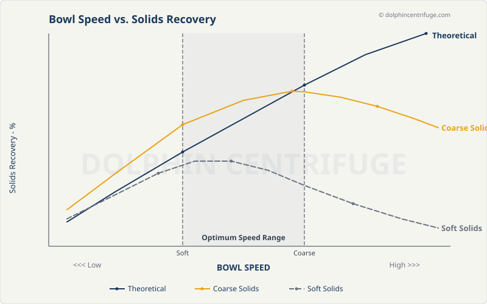
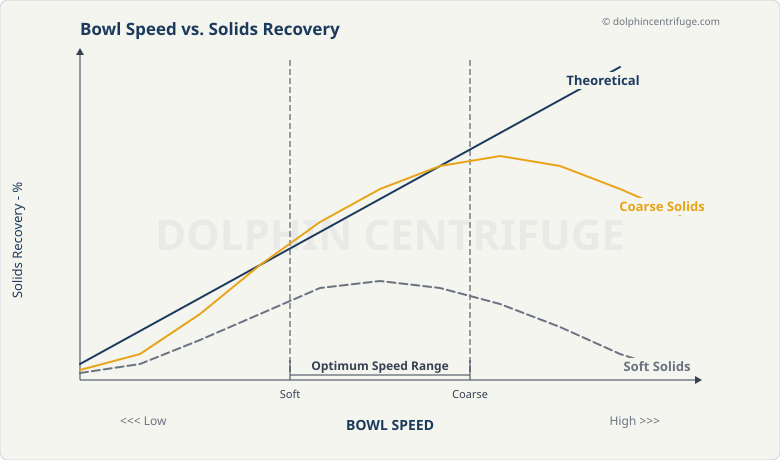
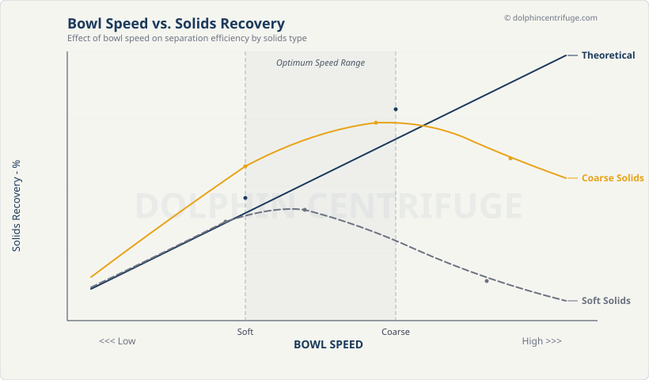

Compare against the original below. Tell Claude which one you like (V1, V2, or V3) and any tweaks.
The current graph from the WordPress site. Faded watermark, inconsistent fonts, low resolution.
Reference only — you provided this as the source image.
Bottom legend bar, full grid lines, shaded optimum range, markers on curves. Most structured layout.

Labels directly on curves (no separate legend). Minimal — no grid lines, axis arrows. Slightly compact.

Includes a subtitle line. Very subtle grid (solid, faint). Labels on right edge with connector lines. Optimum range labeled inside shading.
